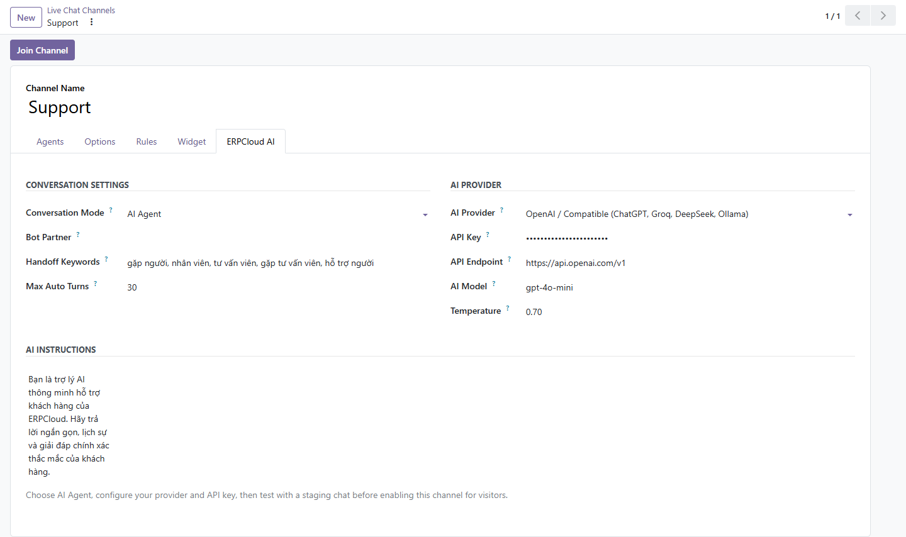
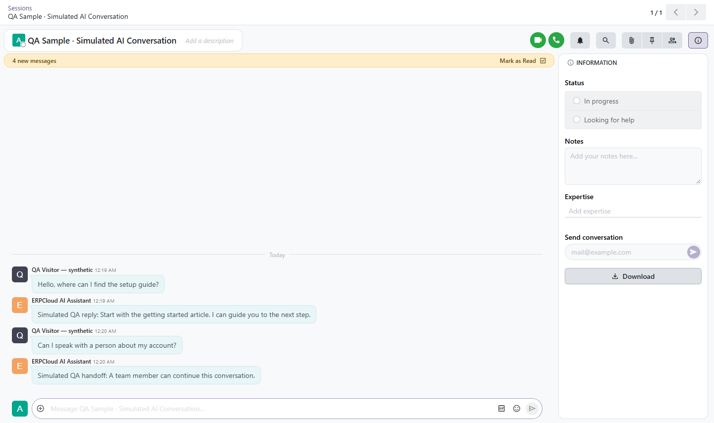

Add an optional AI reply assistant to the Odoo 20 Community Livechat channels you already use.
Configure each channel separately and keep the conversation in core Odoo Discuss. The assistant can answer routine questions and hand a conversation to a person when the visitor asks for help.
Configuration screenshots come from Odoo 20 QA. The conversation screenshot contains a clearly labelled simulated QA exchange, not a response from a live provider. The module needs your own provider account and key for real replies.


Install the module, open a Live Chat Channel, choose the provider and model, enter your key and instructions, then test in a staging channel. Provider usage may incur charges. Requires the standard Livechat and Mail apps.
Free · LGPL-3 · Support: info@erpcloud.vn